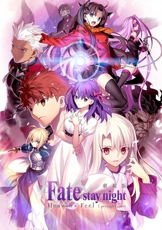
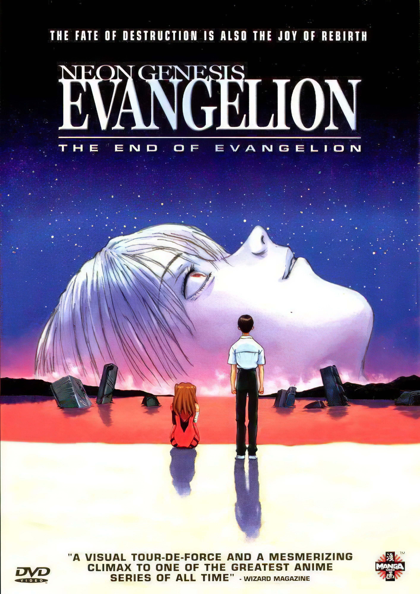
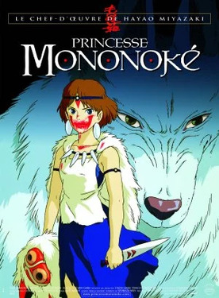
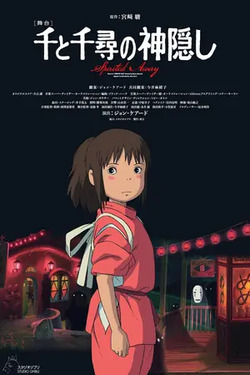
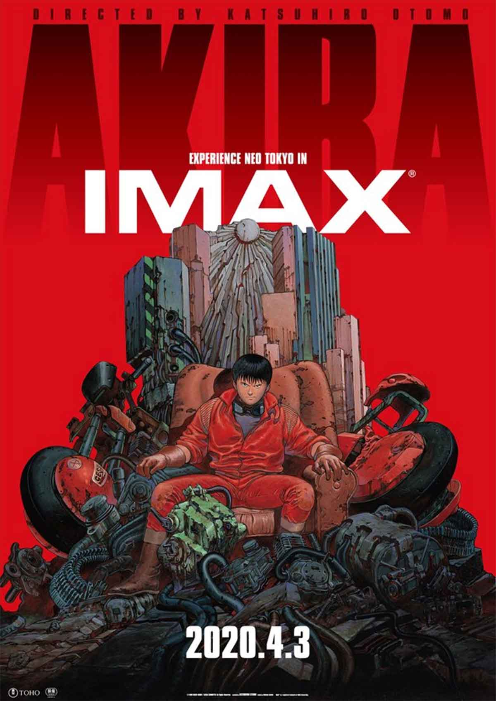
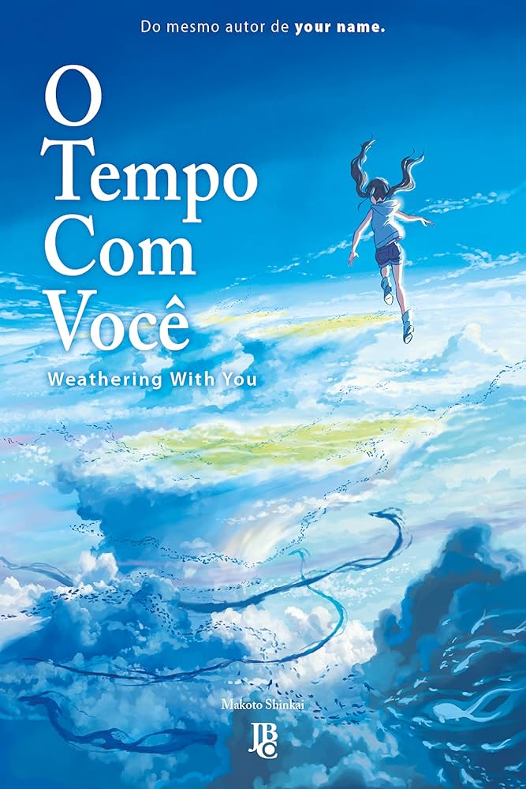
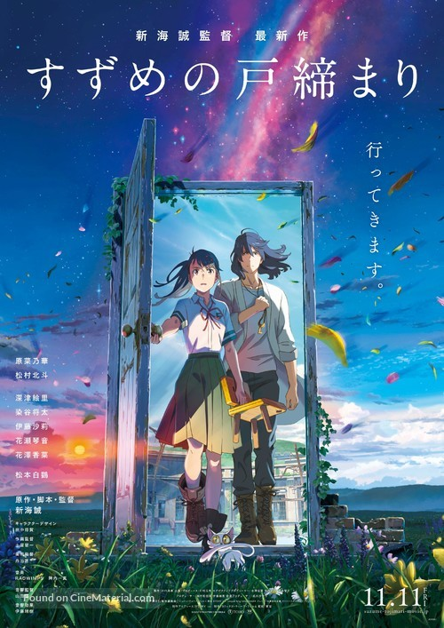
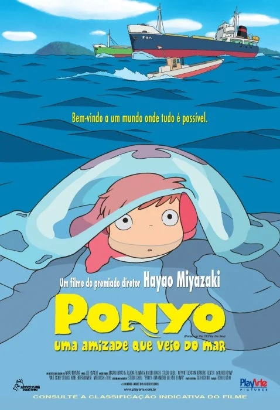

Lista de recomendação
|

Gênero: Ação, Fantasia, Drama Disponível em: Amazon Prime Video. |
NotasIMDB:7,8 Rotten Tomateos: Público:83% J&J:7,9 |
SinipseEm uma batalha secreta conhecida como Guerra do Santo Graal, Shirou Emiya se vê envolvido em uma luta mortal entre magos e seus servos, seres heroicos de épocas passadas. No entanto, a história se torna mais pessoal quando Shirou se concentra em proteger Sakura Matou, sua amiga de infância, enquanto descobre segredos sombrios sobre a guerra e o próprio Santo Graal. |
|
Review pessoalA trilogia Heaven’s Feel é a rota mais sombria da série Fate/stay night. Aqui, a história foca na Sakura, e o tom é bem mais pesado e trágico. É uma história cheia de dor, sacrifício e dilemas morais. A animação da Ufotable é absurda de tão boa, especialmente nas cenas de luta, que são espetaculares. Mas a história é bem densa e emocional, então se prepare pra algo mais pesado do que as outras rotas de Fate. Ponto alto: Animação de cair o queixo e uma trama densa, cheia de emoções fortes. |
|

Gênero: Ficção Científica, Psicológico, Drama Disponível em: Netflix. |
NotasIMDB:8,1 Rotten Tomateos: critíca:92% Público:86% J&J:8,1 |
SinipseComo um epílogo e uma reinterpretação da série "Neon Genesis Evangelion", o filme segue Shinji Ikari enquanto ele enfrenta suas inseguranças e medos em meio ao apocalipse que se aproxima. Com batalhas entre os mechas e a forma física de seres extraterrestres, a narrativa explora temas de identidade, depressão e a busca por conexão humana. |
|
Review pessoalThe End of Evangelion é aquele filme que te deixa com um nó na cabeça. Se você achou o final da série confuso, o filme é ainda mais. Ele aprofunda ainda mais nas questões filosóficas e psicológicas da série, levando os personagens a limites extremos. É um filme que explora a dor, a solidão e o desejo de conexão humana, mas de uma maneira super surreal. Não é um filme fácil, mas é fascinante pra quem gosta de uma história complexa e cheia de camadas. Ponto alto: Intenso, perturbador e cheio de reflexões existenciais. |
|

Gênero: Aventura, Fantasia, Drama Disponível em: Netflix. |
NotasIMDB:8,3 Rotten Tomateos: critíca:93% Público:94% J&J:8,1 |
SinipseEm um Japão feudal, Ashitaka, um príncipe, se vê envolvido em um conflito entre humanos e deuses da floresta, liderados pela princesa Mononoke, que é uma humana criada por lobos. À medida que Ashitaka busca uma cura para uma maldição, ele luta para encontrar um equilíbrio entre a natureza e o progresso humano. |
|
Review pessoalPrincesa Mononoke é uma história épica que fala sobre o conflito entre natureza e civilização. San, a Mononoke, é uma guerreira feroz que luta ao lado dos espíritos da floresta contra a industrialização. O filme é bem mais sombrio e violento do que outros do Miyazaki, mas é uma obra de arte visual e narrativa. Ele fala sobre ecologia de um jeito que faz a gente refletir sobre nosso impacto no mundo. Ponto alto: Batalhas épicas, temas profundos e uma animação linda. |
|

Gênero: Aventura, Fantasia, Drama Disponível em: Netflix. |
NotasIMDB:8,6 Rotten Tomateos: critíca:96% Público:96% J&J:8,3 |
SinipseChihiro é uma jovem que se perde em um mundo espiritual enquanto se muda com seus pais. Quando eles são transformados em porcos, Chihiro deve trabalhar em uma casa de banhos mágica e fazer amigos inusitados para salvá-los e encontrar o caminho de volta para casa. A história é uma jornada de crescimento e descoberta. |
|
Review pessoalEsse é talvez o filme mais famoso do Miyazaki, e com razão. A Viagem de Chihiro é uma aventura mágica que mistura o bizarro com o maravilhoso. A Chihiro é jogada num mundo de espíritos e criaturas esquisitas e precisa salvar seus pais que foram transformados em porcos. O filme é cheio de simbolismos e tem uma mensagem forte sobre amadurecimento e o peso do consumismo. É aquele tipo de filme que pode ser assistido mil vezes e cada vez você descobre algo novo. Ponto alto: Um mundo mágico, cheio de camadas e personagens inesquecíveis. |

Gênero: Romance, Fantasia, Drama Disponível em: HBO Max. |
NotasIMDB:8,4 Rotten Tomateos: critíca:98% Público:91% J&J:8,5 |
SinipseTaki e Mitsuha, dois adolescentes que vivem em locais diferentes, começam a trocar de corpos misteriosamente. Enquanto tentam entender e se comunicar um com o outro através dessa troca, um evento cataclísmico ameaça suas vidas. A história é uma bela mistura de romance, fantasia e drama. |
|
Review pessoalYour Name é aquele filme que te faz acreditar no destino. A história da troca de corpos entre dois adolescentes é ao mesmo tempo divertida e emocionante, mas conforme o filme vai avançando, ele vai ficando mais sério, envolvendo tragédias e perdas. A conexão entre os personagens é tão bem feita que você se pega torcendo por eles o tempo todo. E claro, as animações e cores são de outro nível, tudo muito bonito e poético. Ponto alto: Um equilíbrio perfeito entre romance, drama e fantasia, com uma beleza visual incrível. |
|

Gênero: Ficção Científica, Ação, Distopia Disponível em: Netflix e youtube. |
NotasIMDB:8,6 Rotten Tomateos: critíca:91% Público:90% J&J:8,6 |
SinipseSituado em uma Tóquio pós-apocalíptica, a história segue Kaneda e seu amigo Tetsuo, que, após um acidente, ganha poderes psíquicos extraordinários. Enquanto Kaneda tenta salvar Tetsuo de forças governamentais que buscam controlar sua nova habilidade, o filme explora temas de poder, amizade e a natureza da humanidade. |
|
Review pessoalAkira é um clássico, né? Não tem como falar de anime sem mencionar esse filme. É uma história futurista cheia de ação, política, e umas viagens filosóficas que vão te deixar pensando por dias. A animação, pra época, é absurda de boa, e mesmo hoje impressiona. Mas não é um filme fácil de assistir. A trama é densa e, às vezes, você fica meio perdido no que tá rolando, mas é uma obra-prima pra quem curte ficção científica e distopias. Ponto alto: Inovador, com temas pesados e uma estética que influenciou gerações. |
|

Gênero: Romance, Fantasia, Drama Disponível em: HBO Max e Amazon Prime Video. |
NotasIMDB:7,5 Rotten Tomateos: critíca:92% Público:96% J&J:8,8 |
SinipseHodaka, um jovem que fugiu de casa para Tóquio, encontra Hina, uma garota com a habilidade de controlar o clima. Juntos, eles usam esse poder para mudar a atmosfera da cidade, mas logo percebem que suas ações têm consequências inesperadas e que o equilíbrio entre o poder e as responsabilidades é delicado. |
|
Review pessoalEsse aqui é outro do Makoto Shinkai, e segue a linha de romance com fantasia.A trama é bacana, mas confesso que às vezes achei que faltou um pouco mais de impacto, e acaba não sendo tão emocional quanto Your Name. Ainda assim, me agrada mais porque eu prefiro uma historia mais fantasiosa e leve e também vale a pena pela beleza visual e pela trilha sonora que é muito boa. Ponto alto: Visual impecável e uma história gostosa de acompanhar, mas sem o impacto emocional de outros filmes do diretor. |

Gênero: Drama Disponível em:YouTube |
NotasIMDB:8,1 Rotten Tomateos: critíca:95% Público:93% J&J:9,0 |
SinipseShoya Ishida, um adolescente, busca redenção após ter intimidado uma colega surda, Shoko Nishimiya, na escola. Anos depois, ele decide se reconectar com ela, e a história explora temas de bullying, arrependimento e a luta pela aceitação e perdão. |
|
Review pessoalKoe no Katachi é pesado. É uma história sobre bullying, arrependimento e tentar se redimir depois de errar feio. O protagonista, Shoya, aprontou com uma menina surda na escola, e agora tenta consertar as coisas. O filme é cheio de momentos que te fazem pensar na vida e em como tratamos os outros. É emocionante e doloroso, mas necessário. No final, você sai mexido. Ponto alto: Mostra com muita sinceridade os efeitos do bullying e a importância do perdão. |
|

Gênero: Aventura, Fantasia, Drama Disponível em: Netflix e Crunchyroll |
NotasIMDB:7,6 Rotten Tomateos: critíca:96% Público:98% J&J:9,3 |
SinipseSuzume, uma jovem, descobre um portal misterioso que leva a outros mundos. Junto com um jovem que ela encontra, ela embarca em uma jornada para fechar esses portais e evitar desastres. O filme é uma mistura de aventura e descoberta, com temas de crescimento e responsabilidade. |
|
Review pessoalSuzume já é um filme mais profundo, cheio de metáforas e temas pesados, como luto e superação. A Suzume sai fechando umas portas mágicas pra evitar desastres, e nisso ela vai lidando com suas próprias perdas. O visual é lindo, como todo filme do Makoto Shinkai, mas a história às vezes dá umas voltas que te deixam um pouco confuso. No geral, é um filme que fala de dor, mas de um jeito que ainda te dá esperança. Ponto alto: Cenários de tirar o fôlego e uma trama que fala sobre recomeçar. |
|

Gênero: Fantasia, Família, Aventura Disponível em: Netflix. |
NotasIMDB:7,6 Rotten Tomateos: critíca:91% Público:83% J&J:9,8 |
SinipsePonyo, uma peixinha mágica, deseja se tornar humana e vive uma aventura emocionante quando forma uma amizade com um menino chamado Sosuke. Enquanto sua transformação causa desequilíbrios na natureza, Ponyo e Sosuke precisam lutar para manter a harmonia entre o mundo humano e o mar. |
|
Review pessoalPonyo é uma fofura do início ao fim. É aquele tipo de filme que te abraça e te faz sentir bem. A história é bem simples: uma peixinha que quer virar humana, mas a maneira como o Miyazaki conta isso é mágica. Tudo é colorido, vibrante e parece que você tá flutuando numa onda de boas vibrações. O filme não se preocupa em ser complexo, mas sim em ser encantador. Ponto alto: Visual incrível e uma história que te faz sorrir sem esforço. |